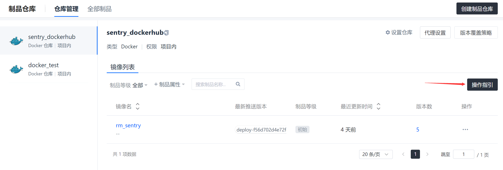
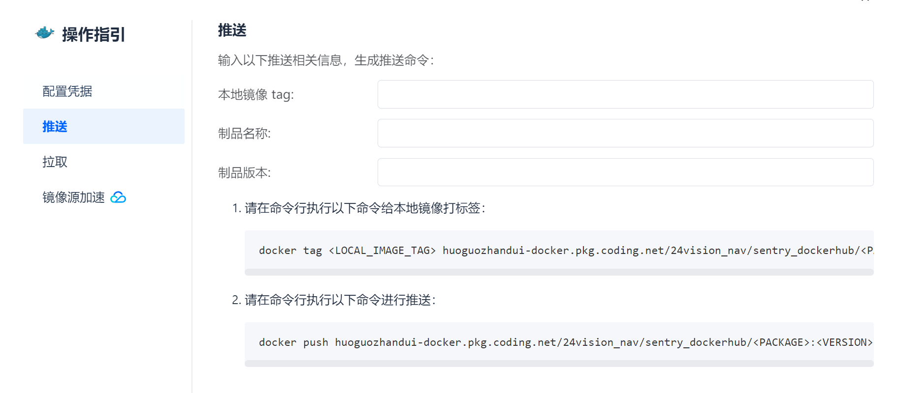

Step by Step in detail: Prepare Docker Image¶
经过了原理介绍，终于！可以开始实践了

准备工作¶
Install Docker on your computer
Install VsCode Extension
Install Xming on Windows / Install XQuartz on Mac
Used for GUI visualization
I am currently using XLanch on Windows.
准备开发使用的镜像¶
方法1 从Docker Hub上下载¶
访问DockerHub，搜索你想要的镜像，Pull下来就可以了。
如果队友已经做好镜像，那么可以在coding平台，项目-> 制品管理：制品仓库->拉取
方法2 自己定制镜像¶
当然会出现DockerHub上的镜像不满足你的需求的情况，这时候就需要自己定制镜像了。
方法2.1 在基础镜像内进行配置¶
从DockerHub上下载一个基础镜像，比如Ubuntu
运行和进入容器 镜像拉去完毕以后就可以把这个镜像运行起来，具体的运行配置可以参考这一篇文章📑Some Useful Command for Docker
docker run -v E:\robotics\orbslam2_learn:/home/orbslam2 -e DISPLAY=host.docker.internal:0.0 -dit thiagofalcao/opencv3
这时候来到VsCode的Docker插件界面，可以看到已经运行的容器了，右键选择Attach Visual Studio Code，就可以进入容器了。
在容器内进行配置
就和在本机上配置环境一样，安装软件，配置环境变量，配置开发环境，配置ROS环境等等。
保存镜像
在配置的过程中可以随时保存镜像，后面要是配坏了，就可以直接用这个镜像重新开始。就像打游戏的时候有个存档一样。
上传镜像到DockerHub
保存好最终的镜像以后，就可以上传到DockerHub上了，这样就可以在任何一台电脑上下载这个镜像了。
在Coding的制品仓库界面有详细的介绍，如何上传镜像。
 
{kind=link}
{kind=link}
方法2.2 使用Dockerfile进行配置¶
如果想要更加灵活的配置镜像，或者需要在服务器上进行镜像的构建，就需要使用Dockerfile了。
其实Dockerfile就是一系列的命令，这些命令会被Docker解析，然后生成一个镜像。
Dockerfile
# Base on which image
FROM ros:humble-perception-jammy
# source ros environment
RUN echo "source /opt/ros/$ROS_DISTRO/setup.bash" >> ~/.bashrc
# color your terminal
RUN echo "force_color_prompt=yes" >> ~/.bashrc
## Install dependencies
RUN apt-get update && apt-get install -y \
# for using add-apt-repository
software-properties-common \
# for download
wget \
# useful tools
aptitude
RUN apt-get update && apt-get install -y \
# rviz2
ros-$ROS_DISTRO-rviz2 \
# Gazebo
# ros-humble-gazebo-ros \
# rqt
ros-$ROS_DISTRO-rqt \
ros-$ROS_DISTRO-rqt-common-plugins \
# navigation2
ros-$ROS_DISTRO-navigation2 \
ros-$ROS_DISTRO-nav2-bringup \
# Turtlebot3
ros-$ROS_DISTRO-turtlebot3-gazebo \
# octomap dependencies
ros-humble-octomap ros-humble-octomap-msgs ros-humble-octomap-mapping \
ros-humble-octomap-ros ros-humble-octomap-rviz-plugins ros-humble-octomap-server\
# octomap viewer
octovis \
# gridmap dependencies
# 🫠 if you are learning gridmap, you may need to install the following packages
# ros-humble-grid-map-demos
ros-humble-grid-map ros-humble-grid-map-cmake-helpers ros-humble-grid-map-core \
ros-humble-grid-map-costmap-2d ros-humble-grid-map-cv ros-humble-grid-map-filters \
ros-humble-grid-map-loader ros-humble-grid-map-msgs ros-humble-grid-map-octomap \
ros-humble-grid-map-pcl ros-humble-grid-map-ros ros-humble-grid-map-rviz-plugin \
ros-humble-grid-map-sdf ros-humble-grid-map-visualization
# LIO-SAM
# Add GTSAM-PPA
RUN add-apt-repository ppa:borglab/gtsam-release-4.1
RUN apt-get install -y \
ros-humble-perception-pcl \
ros-humble-pcl-msgs \
ros-humble-vision-opencv \
ros-humble-xacro \
libgtsam-dev libgtsam-unstable-dev
# Download models for gazebo
RUN mkdir -p /root/.gazebo/models
WORKDIR /root/.gazebo/models
RUN wget http://file.ncnynl.com/ros/gazebo_models.txt
RUN wget -i gazebo_models.txt
# extract models
RUN ls model.tar.g* | xargs -n1 tar xzvf
# clean up
RUN rm model.tar.gz*
# Install extra dependencies with apt
# Install extra dependencies with pip
# add start script
CMD /bin/bash
😶🌫️学不会是吧，其实我是在镜像里装一个，回到dockerfile里写一条，慢慢就搓出来了。
Build your own Docker Image
可以在自己的机器上构建镜像，看看构建的过程是什么样的，理论上服务器上的构建过程是一样的。
# under the path that contains dockerfile
docker build -t <your_image_name>[:<tag>] .
For example
docker build -t rm_sentry:v1.0 .
构建完成后，可以在本机上运行这个镜像，看看是否符合预期。也可以像上面一样，把镜像上传到DockerHub上。